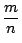
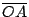

．作者任教於香港科技大學數學系
•對外搜尋關鍵字
|
．作者任教於香港科技大學數學系 •對外搜尋關鍵字 |
一個數 a 的整數倍 再者 。 由上述位移向量的整數倍的定義，容易直接驗証下列運算律，即：
[習題：試用歸納法驗証 (i), (ii) 和 (iii)。]
設
，我們可以把 由此可見，我們應該把 定義為 這樣，就可以把位移向量的倍積由整數倍擴張到有理數倍。而且上述擴張法是唯一能夠使得下列運算律依然成立者，即
最後一步，讓我們來分析一下位移向量的實數倍應該如何定義。設 λ
是一個非比實數（亦稱為無理數），
。令 B* 是直線 AB 上那個唯一的點使得有向長度之比
則 應該定義為 ，因為它是唯一能夠使得下述比較原則成立者，即 「設 λ 介于兩個有理數  和 之間而且 , ， 則 B* 亦必介于 B', B'' 之間。」而運用上述比較原則和 Eudoxus 夾逼原理即可驗証上述所定義的實數倍的倍積也滿足同樣的運算律，即
對于任給實數 λ, μ 和位移向量 [註]：放大、縮小這種相似變換是空間中常見常用者，而平面幾何中的相似三角形定理則是關于相似變換的基本定理。在此，值得注意的是倍積分配律 的本質就是上述基本定理的代數化形式（參看 [圖 5-2]）。
令
,
，則
。如 [圖 5-2] 所示，
[ 圖 5-2 ]
|
一個位移向量
含有方向和長度這樣兩種本質，我們將用符號 |a| 表示其長度，以
表示兩者的方向之差，亦即兩者之間的夾角。在平面幾何學的研討中，三角形是既精且簡的基本圖形，用向量來表達三角形，則它的三個有向邊就可以分別表達成 而在一般 總之，對于任給兩個位移向量 是一個值得研討的幾何量，例如 乃是 若以 的定義（即 (5.1)-式）代入 (5.2)-式，即得所需証者，實乃下述含有三個任意向量的恆等式，亦即 要証明上述對于任給三個向量 都普遍成立的恆等式之前，自然要看一看是否有一種對于任給二個向量 都普遍成立的恆等式呢？若有，則一來肯定比較容易証明，二來說不定還可以把「後者」用來証明「前者」。要把上述想法付諸實踐，當然就得有一個「後者」究竟是怎麼樣的恆等式的「猜想」才能進而証明之，是不？
在此，我們自然要用上反推法去「按圖索驥」。亦即假想 (5.2)-式成立的話，應該會有那種對于任何一對向量都普遍成立的恆等式？若用 (5.2)-式反推，則有
由此可見，應該有恆等式（稱之為廣義勾股定理） 請注意，上面這一小段反推法分析只是說明：假如 (5.2)-式恆成立，則 (5.3)-式也恆成立。而我們真正要做的是先用幾何直接証明 (5.3)-式恆成立，然後再設法用它來証明 (5.2)-式（亦即 (5.2')-式）恆成立。反推法的分析其實只是讓我們想到 (5.3)-式恆成立這個待証的猜想。在論証上述猜想之前，不妨先對幾個特別簡單的情形，看一看它是否成立，亦即在
當
時，
，所以
當 時， ，所以 當 時，由勾股定理，即有 上述對于三種簡單特例的驗証，其實也提供了下述把一般的情形的証明歸于上述業已 驗証的三種特殊情形來加以推導的思路，如 [圖 5-3] 所示，我們可以用垂直投影把 分解成 ，其中 和
[ 圖 5-3 ]
這樣，就可以把 (5.3)-式的証明歸于上述三種業已驗証的情形作如下推導：
現在讓我們再用剛才証明的 (5.3)-式純代數地去推導 (5.2')-式的普遍成立： 令 , ，即有
將上述四個恆等式相加後再遍乘以 ，即得恆等式 (5.2')，亦即 (5.2)-式普遍成立。
總結上面的討論，我們以勾股定理為基礎，証明幾何量
具有 (5.2)-式所表達既簡且精的性質，它將是用向量去研討幾何廣泛有用的有力工具。在向量代數中，我們索興把它想成是一種由兩個向量求得一個數值的一種乘積，叫做向量的內積
(inner product) 並改用符號
為向量內積的定義式。這樣做的基本原由就是使得性質 (5.2) 可以直截了當地改寫成 這種分配律的形式，使得它運用起來能夠更加得心應手。
【定義】：（向量內積）位移向量 內積的運算律：
[當 k 是整數或有理數時，(iii) 是 (i) 和 (ii) 的推論。當 k 是非比實數時，則可用倍積的比較原則和 Eudoxus 原理加以推導。] 內積的幾何意義：
[ (iii) 的証明] 先驗証 或 這兩種特殊情形。
若 ，則有
|a+b|=|a|+|b| 。所以
若 ，則有 ，所以 在一般的情形，可將 b 分解成 而 或 π，則有 而
[註]：上述公式提供了用內積表達兩個非零向量的夾角餘弦的公式，即
其實，上述公式就是平面幾何中熟悉的餘弦定律。由此可見，長度和角度都可以用向量內積去有效計算，而內積本身又具有一套十分簡明有力的運算律，特別是分配律。在本質上，內積分配律乃是勾股定理的提升和精簡之所得，也可以說是勾股定理代數化的最佳形式。
|
四面體是三角形的三維推廣。而具有三個棱正交于一點的四面體則是直角三角形的推廣，我們將稱之為正交四面體，如 [圖 5-4] 所示：
面積的勾股定理：
設 , , 正交于 O，它共交于 O 點的三個三角形
【定理 5.3】：（面積的勾股定理）一個正交四面體的斜面面積的平方恆等于其他三個面的面積平方之和，亦即如 [圖 5-4] 所示
証明：令正交四面體的三個正交于 O 點的棱長分別是
易見其三個互相正交的三角形的面積分別為 再者，由平面幾何中的秦九韶公式，其斜面面積平方是 □
在坐標幾何中，勾股定理的重要推論是下述距離公式
其幾何意義是：空間中直線段 當 a=b 時，即有 由此可見上述內積公式實乃距離公式的推廣。 [定理 5.3]的幾何意義是：空間中一片平面的面積平方等于它在三個互相垂直的平面（例如一個正交坐標系的三個坐標面）上的垂直投影的面積平方之和。由此可以猜想到，我們也應該試著將面積的勾股定理的本質進一步轉化為在空間中一片平面和另一片平面之間的「內積」的適當定義。
假如我們把一個有向線段想成一種有向的 1-維基本幾何事物，定向平行四邊形
而且
讓我們先來看看 1-維的情形。設
若
現在讓我們試著對于
且以符號 表示上面所定義的量。
【定理 5.4】：
証明：(i) 設
(ii) 設
再者，c-c' 和 d-d' 乃是垂直于 Π 的向量，而 亦即 即已証得 □
[定理 5.4]的公式充分顯示這種內積的 2-維推廣肯定就是我們所想要者，例如
再者，設 e1,e2,e3 分別是一個取定正交坐標系在 x,y,z 軸上的單位向量。令 不難用直接計算去驗証： 向量的 ×-積：
在一個已經定向的空間之中（通常約定以右手型為所選之正向），我們可以用一個唯一的向量
(a x b) 去充分表達空間中一個（定向）平行四邊形
[ 圖 5-5 ]
由上述 ×-積的定義易見
a x b=-(b x a)
而且對于任給 c， 其實上式就是平行六面體的體積等于底面積乘高的向量表達式。 【定理 5.5】：向量的 ×-積滿足下列運算律：
証明：
四元數——時空的代數：
時間是一維的，空間是三維的，所以時空組合的總體是四維的，亦即
Hamilton 的創見賦予時空一種既自然又美妙的代數結構，這也就是著名的四元數 (quaternions)。其加、乘運算的定義如下： 上述加、乘運算除了乘法的交換律之外，滿足所有其他各種慣用的運算律，例如加法的交換律和結合律，加、乘結合的分配律和乘法的結合律等等。其中驗起來比較繁複的是乘法結合律，茲証之如下：運用分配律，可以把所要驗証的要點歸結到 這個最不平凡的情形。由前述四元數的定義，即有 由此可見，用[定理 5.5]的公式 (vi) 即有 再者，我們也可以類同于複數 (complex number) 的情形定義共軛和絕對值，即 
則有 總之，四元數乃是研討時空的精簡有效的數學工具，它也是研究學習電磁學、狹義相對論的基本工具。
|
|
|
|
|
（若有指正、疑問……，可以在此 留言 或 寫信 給我們。） |
|
|
|
EpisteMath (c) 2000 中央研究院數學所、台大數學系 各網頁文章內容之著作權為原著作人所有 |
| 最後修改日期：6/19/2004 |